堆排序算法（图解详细流程）
堆排序的时间复杂度O(N*logN),额外空间复杂度O(1)，是一个不稳定性的排序
一 准备知识
堆的结构可以分为大根堆和小根堆，是一个 完全二叉树 ，而堆排序是根据堆的这种数据结构设计的一种排序，下面先来看看什么是大根堆和小根堆
大根堆和小根堆
性质：每个结点的值都大于其左孩子和右孩子结点的值，称之为大根堆；每个结点的值都小于其左孩子和右孩子结点的值，称之为小根堆。如下图
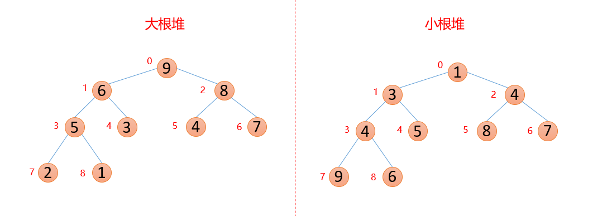
我们对上面的图中每个数都进行了标记，上面的结构映射成数组就变成了下面这个样子
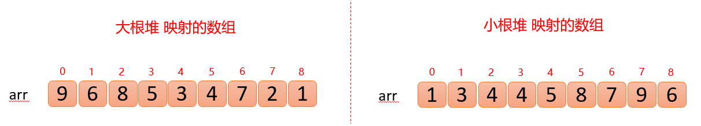
还有一个基本概念：查找数组中某个数的父结点和左右孩子结点，比如已知索引为 i 的数，那么
- 父结点索引：( i -1)/2（这里计算机中的除以2，省略掉小数）
- 左孩子索引：2* i +1
- 右孩子索引：2* i +2
所以上面两个数组可以脑补成堆结构，因为他们满足堆的定义性质：
大根堆： arr(i)>arr(2i+1) && arr(i)>arr(2i+2)
小根堆： arr(i)<arr(2i+1) && arr(i)<arr(2i+2)
二 堆排序基本步骤
基本思想：
- 首先将待排序的数组构造成一个大根堆，此时，整个数组的最大值就是堆结构的顶端
- 将顶端的数与末尾的数交换，此时，末尾的数为最大值，剩余待排序数组个数为n-1
- 将剩余的n-1个数再构造成大根堆，再将顶端数与n-1位置的数交换，如此反复执行，便能得到有序数组
构造堆
将无序数组构造成一个大根堆（升序用大根堆，降序就用小根堆）
假设存在以下数组
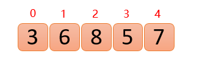
主要思路：第一次保证00位置大根堆结构（废话），第二次保证01位置大根堆结构，第三次保证02位置大根堆结构…直到保证0n-1位置大根堆结构（每次新插入的数据都与其父结点进行比较，如果插入的数比父结点大，则与父结点交换，否则一直向上交换，直到小于等于父结点，或者来到了顶端）
插入6的时候，6大于他的父结点3，即arr(1)>arr(0)，则交换；此时，保证了0~1位置是大根堆结构，如下图：
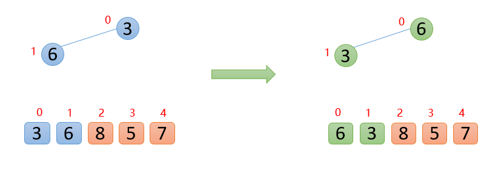
(友情提示：待交换的数为蓝色，交换后的数为绿色)
插入8的时候，8大于其父结点6，即arr(2)>arr(0),则交换；此时，保证了0~2位置是大根堆结构，如下图
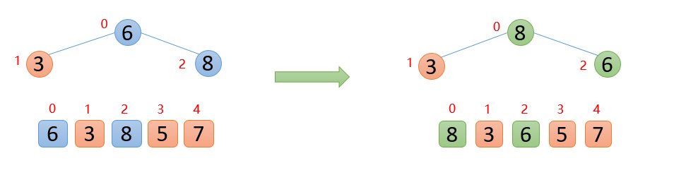
插入5的时候，5大于其父结点3，则交换，交换之后，5又发现比8小，所以不交换；此时，保证了0~3位置大根堆结构，如下图
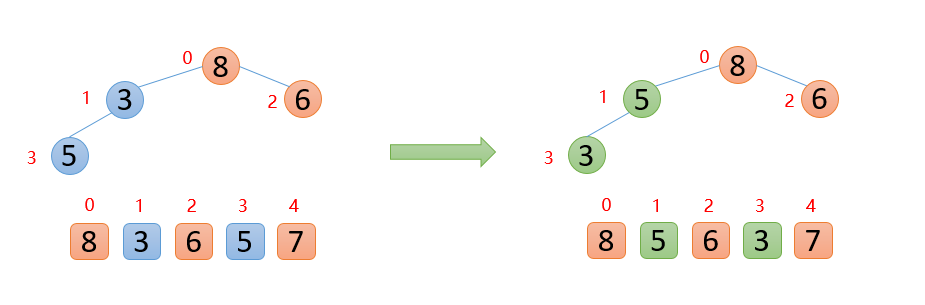
插入7的时候，7大于其父结点5，则交换，交换之后，7又发现比8小，所以不交换；此时 整个数组已经是大根堆结构
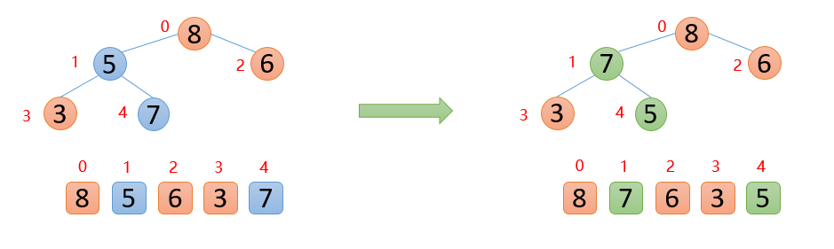
固定最大值再构造堆
此时，我们已经得到一个大根堆，下面将顶端的数与最后一位数交换，然后将剩余的数再构造成一个大根堆
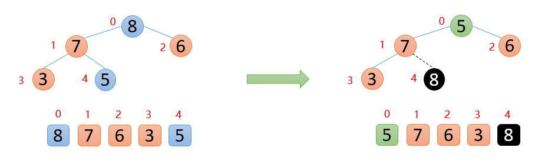
（友情提示：黑色的为固定好的数字，不再参与排序）
此时最大数8已经来到末尾，则固定不动，后面只需要对顶端的数据进行操作即可，拿顶端的数与其左右孩子较大的数进行比较，如果顶端的数大于其左右孩子较大的数，则停止，如果顶端的数小于其左右孩子较大的数，则交换，然后继续与下面的孩子进行比较
下图中，5的左右孩子中，左孩子7比右孩子6大，则5与7进行比较，发现5<7，则交换；交换后，发现5已经大于他的左孩子，说明剩余的数已经构成大根堆，后面就是重复固定最大值，然后构造大根堆
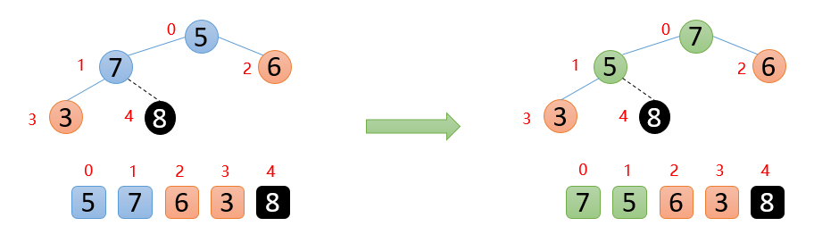
如下图：顶端数7与末尾数3进行交换，固定好7，
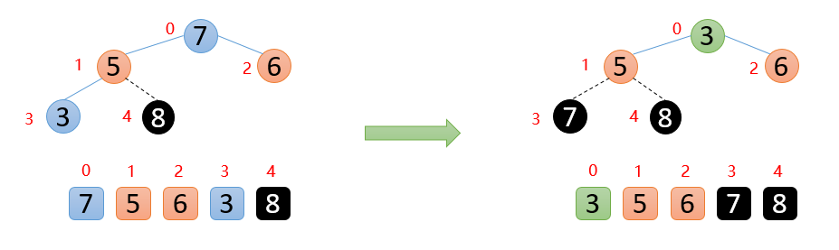
剩余的数开始构造大根堆 ，然后顶端数与末尾数交换，固定最大值再构造大根堆，重复执行上面的操作，最终会得到有序数组
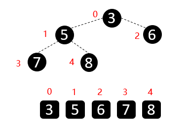
三 总结
到这里，大家应该对堆排序都有了自己的见解，我们对上面的流程总结下：
- 首先将无需数组构造成一个大根堆（新插入的数据与其父结点比较）
- 固定一个最大值，将剩余的数重新构造成一个大根堆，重复这样的过程
四 代码
代码中主要两个方法：
- 将待排序数组构造成一个大根堆（元素上升）
- 固定一个最大值，将剩余的数再构造成一个大根堆（元素下降）
1 | //堆排序 |